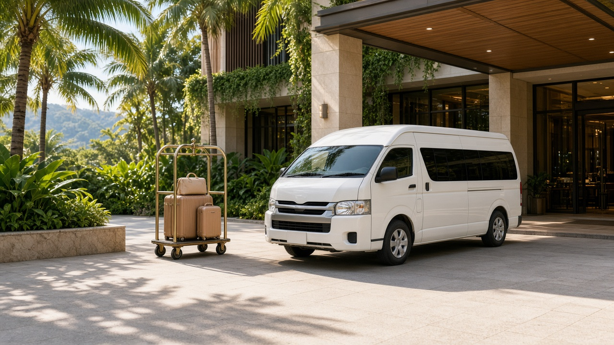

คู่มือรถตู้ภูเก็ต
รถตู้ภูเก็ตย้ายโรงแรมและรับส่งหลายจุดในวันเดียว
คู่มือรถตู้ภูเก็ตสำหรับย้ายโรงแรม รับส่งหลายจุดในวันเดียว จัดการสัมภาระระหว่างที่พัก เลือกเหมาคันหรือเที่ยวเดียว และเช็คลิสต์ก่อนจอง
25 กันยายน 2026

Infinity Transport Phuket — รถตู้ภูเก็ตย้ายโรงแรมและรับส่งหลายจุดในวันเดียว ทริปภูเก็ตหลายวันมักไม่ได้พักที่เดียวตลอด มีทั้งการย้ายจากโรงแรมหนึ่งไปอีกแห่ง การเช็คเอาท์เช้าแล้วไปเที่ยวก่อนเช็คอินบ่าย หรือวันที่ต้องรับส่งหลายจุดในวันเดียว เช่น โรงแรมเก่า → จุดชมวิว → ร้านอาหาร → โรงแรมใหม่ ในแต่ละสถานการณ์ คำถามที่พบบ่อยคือ ควรจอง รถตู้ภูเก็ต แบบเที่ยวเดียวหลายเที่ยว หรือ รถตู้เหมาภูเก็ต ตลอดวัน
บทความนี้โฟกัสการใช้ เช่ารถตู้ภูเก็ตพร้อมคนขับ สำหรับย้ายโรงแรมและรับส่งหลายจุดในวันเดียว ตั้งแต่การประเมินว่าควรเหมาคันหรือแยกเที่ยว การจัดการสัมภาระระหว่างที่พัก ข้อมูลที่ควรแจ้งตอนจอง ไปจนถึงเช็คลิสต์ก่อนวันเดินทาง โดยอ้างอิงรูปแบบบริการจริงของ Infinity Transport & Travel Phuket และไม่สร้างราคาหรือเงื่อนไขที่ไม่มีในเว็บไซต์
คำตอบสั้นสำหรับ Featured Snippet:
การใช้ รถตู้ภูเก็ต ย้ายโรงแรมหรือรับส่งหลายจุดในวันเดียว ควรแจ้งลำดับจุดหมาย เวลาเช็คเอาท์–เช็คอิน และจำนวนสัมภาระให้ชัด หากมีจุดแวะ 3 จุดขึ้นไปหรือต้องรอระหว่างที่พัก รถตู้เหมาภูเก็ต มักยืดหยุ่นกว่าเรียกรถแยกหลายเที่ยว ส่วนย้ายตรงโรงแรมหนึ่งไปอีกแห่งอาจใช้รับส่งเที่ยวเดียวก็เพียงพอ
สารบัญ
1. ทำไมการย้ายโรงแรมถึงต้องวางแผนรถต่างจากทริปปกติ
2. ย้ายโรงแรมตรง vs หลายจุดในวันเดียว เลือกแบบไหน
3. เหมาคัน vs รับส่งเที่ยวเดียว — เปรียบเทียบอย่างไร
4. จัดการสัมภาระระหว่างย้ายที่พัก
5. ข้อมูลที่ควรแจ้งตอนจองย้ายโรงแรม
6. ตัวอย่างแผนรับส่งหลายจุดในวันเดียว
7. เช็คลิสต์ก่อนวันย้ายโรงแรม
8. ทำไมลูกค้าจึงเลือก Infinity Transport & Travel Phuket
9. คำถามที่พบบ่อย
10. สรุปท้ายบทความ
11. ติดต่อเรา (CTA)
ทำไมการย้ายโรงแรมถึงต้องวางแผนรถต่างจากทริปปกติ
การย้ายโรงแรมในภูเก็ตไม่ใช่แค่ “จากจุด A ไปจุด B” เพราะมักมีช่วงเวลาว่างระหว่างเช็คเอาท์กับเช็คอิน โรงแรมหลายแห่งกำหนดเวลาเช็คอินช่วงบ่าย ในขณะที่เช็คเอาท์มักอยู่ก่อนเที่ยง ช่วงว่างนี้ทำให้ผู้เดินทางต้องตัดสินใจว่าจะเก็บกระเป๋าไว้ที่ไหน จะไปเที่ยวก่อนหรือรอที่ล็obbies โรงแรม และจะใช้รถแบบใดให้คุ้มและสะดวก
นอกจากนี้ การย้ายโรงแรมมักเกิดขึ้นกลางทริป ไม่ใช่แค่วันแรกหรือวันสุดท้าย จึงมีโอกาสที่สัมภาระจะเพิ่มขึ้นจากการช้อปปิ้งหรือของฝาก การเลือก บริการรถตู้ภูเก็ต ที่รองรับทั้งคนและกระเป๋าได้พอดีจึงสำคัญ โดยเฉพาะครอบครัวหรือกลุ่มที่มีกระเป๋าใบใหญ่หลายใบ
ความท้าทายหลักเมื่อย้ายที่พักกลางทริป
หัวข้อ สิ่งที่มักเกิดขึ้น ผลต่อการวางแผนรถ ช่วงเวลาว่าง เช็คเอาท์เช้า แต่เช็คอินบ่าย อาจต้องเหมาคันเพื่อแวะเที่ยวระหว่างทาง สัมภาระ กระเป๋าเพิ่มจากวันแรก ต้องแจ้งจำนวนกระเป๋าล่วงหน้า โซนที่พัก ย้ายข้ามโซน เช่น ป่าตอง → กมลา ใช้เวลาเดินทางต่างกัน หลายคนในครอบครัว คนละจังหวะพร้อมออกจากห้อง ควรกำหนดเวลารับที่ชัด จุดแวะ อยากแวะซื้อของหรือทานมื้อกลางวัน ต้องบอกลำดับจุดตั้งแต่จอง
เคล็ดลับ: ก่อนจอง ให้เขียนไทม์ไลน์วันนั้นเป็นขั้นตอน เช่น 10:00 เช็คเอาท์ → 11:00 แวะเมืองเก่า → 13:00 มื้อกลางวัน → 15:00 เช็คอิน แล้วส่งให้ทีมงานช่วยประเมินว่าควรเหมาคันหรือแยกเที่ยว
ดูภาพรวมบริการได้ที่ หน้าบริการ และ Landing รถตู้ภูเก็ต ข้อมูลท่องเที่ยวภูเก็ตอ้างอิงได้จาก การท่องเที่ยวแห่งประเทศไทย
ย้ายโรงแรมตรง vs หลายจุดในวันเดียว เลือกแบบไหน
รูปแบบการย้ายที่พักในภูเก็ตแบ่งได้คร่าว ๆ เป็น 2 แบบ คือ ย้ายตรง จากโรงแรมเก่าไปโรงแรมใหม่ทันที และ ย้ายพร้อมแวะ ที่มีจุดหมายระหว่างทางในวันเดียว
ย้ายโรงแรมตรง (Point-to-Point)
เหมาะเมื่อเช็คเอาท์และเช็คอินใกล้กัน หรือโรงแรมใหม่อนุญาตให้เช็คอินเร็ว รูปแบบนี้ใกล้เคียงรับส่งเที่ยวเดียว จุดรับหนึ่งจุด จุดส่งหนึ่งจุด ไม่มีจุดแวะระหว่างทาง หากทริปของคุณเป็นแบบนี้ การจอง รถตู้ภูเก็ต แบบเที่ยวเดียวอาจเพียงพอ
สิ่งที่ควรยืนยัน:
ชื่อโรงแรมเก่าและใหม่พร้อมที่อยู่
เวลาเช็คเอาท์และเช็คอินที่คาดหวัง
จำนวนผู้โดยสารและกระเป๋า
ย้ายพร้อมหลายจุดในวันเดียว (Multi-Stop)
เหมาะเมื่อมีช่วงเวลาว่างระหว่างที่พัก และอยากใช้เวลานั้นเที่ยวหรือทำธุระ โดยไม่ต้องกลับไปรับกระเป๋าที่โรงแรมเก่าอีกครั้ง รูปแบบนี้มักใช้ รถตู้เหมาภูเก็ต ตามช่วงเวลาที่ตกลง เพราะรถจะอยู่กับคุณตลอดและสามารถปรับลำดับจุดแวะได้ภายในขอบเขตที่ตกลง
ตัวอย่างลำดับจุดที่พบบ่อย:
1. รับจากโรงแรมเก่า (หลังเช็คเอาท์)
2. แวะจุดชมวิวหรือเมืองเก่าภูเก็ต
3. มื้อกลางวันหรือแวะซื้อของ
4. ส่งที่โรงแรมใหม่ (ก่อนหรือหลังเช็คอิน)
คำคมจากทีมวางแผนทริป:
“วันย้ายโรงแรมไม่จำเป็นต้องเป็นวันเสียไป ถ้าวางแผนให้รถอยู่กับคุณตลอดช่วงว่าง คุณจะได้ทั้งย้ายที่พักและเที่ยวในวันเดียวโดยไม่แบกกระเป๋าไปมา”
อ่านแนวทางจองทั่วไปได้ที่ วิธีจองรถตู้ภูเก็ต
เหมาคัน vs รับส่งเที่ยวเดียว — เปรียบเทียบอย่างไร
การเลือกระหว่าง รถตู้เหมาภูเก็ต กับการจองรับส่งเที่ยวเดียวหลายเที่ยว ขึ้นกับจำนวนจุดแวะ เวลารอ และความยืดหยุ่นที่ต้องการ ไม่มีคำตอบเดียวที่ถูกสำหรับทุกทริป
ตารางเปรียบเทียบ
เกณฑ์ รับส่งเที่ยวเดียว เหมาคัน (ครึ่งวัน/เต็มวัน) จำนวนจุด 1 จุดรับ → 1 จุดส่ง หลายจุดตามแผน ความยืดหยุ่น ต่ำ ต้องจองแต่ละเที่ยว สูง ปรับลำดับได้ในขอบเขตที่ตกลง การจัดการสัมภาระ ขึ้นลงรถทุกเที่ยว เก็บในรถได้ระหว่างแวะ เหมาะกับ ย้ายตรงโรงแรม ย้ายพร้อมเที่ยวหลายจุด การประเมินราคา ต่อเที่ยว ตามช่วงเวลาที่เหมา
เมื่อไหร่ควรเลือกรับส่งเที่ยวเดียว
ย้ายจากโรงแรม A ไปโรงแรม B โดยตรง ไม่มีจุดแวะ
เวลาเช็คเอาท์และเช็คอินต่อเนื่อง ไม่มีช่วงว่าง
สัมภาระน้อย ขึ้นรถครั้งเดียวถึงปลายทาง
เมื่อไหร่ควรเลือกเหมาคัน
มีช่วงว่าง 3–6 ชั่วโมงระหว่างเช็คเอาท์และเช็คอิน
อยากแวะ 2 จุดขึ้นไปในวันเดียว
มีกระเป๋าเยอะ ไม่อยากยกขึ้นลงรถหลายครั้ง
ต้องการให้คนขับช่วยดูแลเส้นทางตลอดวัน
รายละเอียดรูปแบบบริการและแนวทางราคาเบื้องต้นดูได้ที่ หน้าราคา โดยราคาจริงขึ้นกับรายละเอียดทริป ควรยืนยันกับทีมงานก่อนจอง
เคล็ดลับ: อย่าเปรียบเทียบ “ราคาเที่ยวเดียว 1 เที่ยว” กับ “ราคาเหมาครึ่งวัน” โดยตรง เพราะขอบเขตการใช้งานต่างกัน ให้เปรียบเทียบว่าแผนของคุณต้องการกี่จุดและกี่ชั่วโมง
จัดการสัมภาระระหว่างย้ายที่พัก
สัมภาระเป็นปัจจัยที่มักถูกมองข้ามจนกระทั่งวันย้ายจริง โดยเฉพาะทริปหลายวันที่ซื้อของฝากหรือมีอุปกรณ์เดินทางเพิ่ม
หลักการจัดสัมภาระเมื่อย้ายโรงแรม
แจ้งจำนวนกระเป๋าตอนจอง ทั้งใบใหญ่และใบเล็ก เพื่อให้ทีมงานเลือกรุ่นรถที่พอดีแยกของที่ต้องใช้ระหว่างวัน ใส่กระเป๋าใบเล็กหรือ tote ไม่ต้องเปิดกระเป๋าใหญ่ทุกครั้งที่แวะตรวจสอบพื้นที่ท้ายรถ ก่อนออกจากโรงแรมเก่า ว่าใส่ครบทุกใบอย่าเผื่อที่นั่งเต็มแต่ลืมสัมภาระ กลุ่ม 8 คนพร้อมกระเป๋า 24 นิ้วหลายใบ อาจต้องเลือกรถที่ใหญ่กว่าที่คิด
ตารางแนวทางเลือกรถตามคนและสัมภาระ
จำนวนผู้โดยสาร สัมภาระโดยประมาณ สิ่งที่ควรทำ 1–4 คน 2–4 ใบใหญ่ แจ้งจำนวนใบให้ชัด ดูรุ่นรถที่ หน้ารถทั้งหมด 5–8 คน 6–10 ใบใหญ่ อาจต้องใช้รถ 8–9 ที่นั่ง ไม่ใช่ดูแค่จำนวนคน 9 คนขึ้นไป สัมภาระมาก พิจารณารถขนาดใหญ่และแจ้งล่วงหน้า
เคล็ดลับ: หากวันย้ายโรงแรมตรงกับวันมาถึงหรือวันกลับที่มีไฟลท์ ให้วางแผนสัมภาระให้ของที่ต้องใช้บนเครื่องอยู่แยกจากกระเป๋าใหญ่ อ่านคู่มือรับส่งสนามบินเพิ่มได้ที่ รถตู้รับส่งสนามบินภูเก็ต และข้อมูลสนามบินที่ เว็บไซต์ทางการของท่าอากาศยานภูเก็ต
ข้อมูลที่ควรแจ้งตอนจองย้ายโรงแรม
ยิ่งแจ้งรายละเอียดครบ ทีมงานยิ่งจัดรถและเวลาได้ตรงความต้องการ โดยเฉพาะวันที่มีหลายจุดในตารางเดียว
รายการข้อมูลสำคัญ
วันที่และเวลาเช็คเอาท์โดยประมาณ
ชื่อและที่อยู่โรงแรมเก่า
ชื่อและที่อยู่โรงแรมใหม่
เวลาเช็คอินโดยประมาณ (ถ้าทราบ)
จุดแวะระหว่างทาง (ถ้ามี) พร้อมลำดับ
จำนวนผู้ใหญ่ เด็ก และผู้สูงอายุ
จำนวนกระเป๋าใบใหญ่ / ใบเล็ก
ต้องการเหมาคันหรือเที่ยวเดียว
ช่องทางติดต่อระหว่างวันเดินทาง
ทำไมชื่อโรงแรมและโซนจึงสำคัญ
ภูเก็ตมีโรงแรมกระจายหลายโซน ระยะเวลาจากป่าตองไปกมลา หรือจากกะตะไปเมืองภูเก็ต ไม่เท่ากัน การแจ้งชื่อโรงแรมและโซนที่พักช่วยให้ทีมงานประเมินเวลาเดินทางและแนะนำว่าควรเหมาครึ่งวันหรือเต็มวัน
เคล็ดลับ: หากโรงแรมใหม่ยังไม่ยืนยันห้อง ให้แจ้งชื่อโรงแรมและเวลาเช็คอินที่คาดหวังไว้ก่อน แล้วอัปเดตเมื่อได้ข้อมูลชัด
ตัวอย่างแผนรับส่งหลายจุดในวันเดียว
ตัวอย่างด้านล่างเป็นแนวทางวางแผน ไม่ใช่ตารางตายตัว ควรปรับตามเวลาเช็คอินของโรงแรมและจังหวะของกลุ่ม
แผน A: ย้ายโรงแรมพร้อมเที่ยวครึ่งวัน
เวลาโดยประมาณ กิจกรรม หมายเหตุ 11:00 เช็คเอาท์และรับจากโรงแรมเก่า เตรียมกระเป๋าให้พร้อมก่อนเวลา 11:30–13:00 แวะเมืองเก่าภูเก็ต เก็บสัมภาระในรถ 13:00–14:00 มื้อกลางวัน แจ้งจุดร้านล่วงหน้าหรือให้คนขับแนะนำ 14:30 ส่งที่โรงแรมใหม่ เช็คอินตามเวลาโรงแรม
แผน B: ย้ายตรงโรงแรม
เวลาโดยประมาณ กิจกรรม หมายเหตุ 12:00 เช็คเอาท์และรับจากโรงแรมเก่า รับส่งเที่ยวเดียว 12:30 ถึงโรงแรมใหม่ เช็คอินได้ทันทีหากโรงแรมอนุญาต
แผน C: ย้ายข้ามโซนพร้อมจุดชมวิว
เวลาโดยประมาณ กิจกรรม หมายเหตุ 10:00 รับจากโรงแรมโซนเหนือ เช่น ป่าตอง / กมลา 11:00 แวะจุดชมวิว เผื่อเวลาเดินทางข้ามเกาะ 13:00 มื้อกลางวัน 15:00 ส่งโรงแรมโซนใต้ เช่น กะตะ / ราไวย์
คำคม:
“แผนที่ดีไม่ใช่แผนที่แน่นที่สุด แต่เป็นแผนที่มีเวลาพอสำหรับย้ายสัมภาระ ขึ้นลงรถ และไม่ต้องเร่งจนเหนื่อย”
เช็คลิสต์ก่อนวันย้ายโรงแรม
เช็คลิสต์วันก่อนย้าย
ยืนยันเวลารับและลำดับจุดกับทีมงาน
ตรวจสอบนโยบายเช็คเอาท์/เช็คอินของโรงแรมทั้งสองแห่ง
นับกระเป๋าและแยกของใช้ระหว่างวัน
บันทึกช่องทางติดต่อคนขับหรือทีมงาน
เตรียมที่อยู่โรงแรมใหม่ (ภาษาไทย/อังกฤษ) ให้คนขับ
เช็คลิสต์วันย้าย
เช็คเอาท์และตรวจห้องว่าไม่ลืมของ
นับกระเป๋าก่อนขึ้นรถ
แจ้งคนขับหากเลื่อนเวลาออกจากโรงแรม
เก็บของมีค่าไว้กับตัว ไม่ใส่ท้ายรถ
ยืนยันจุดส่งสุดท้ายก่อนถึงโรงแรมใหม่
เคล็ดลับ: หากเดินทางเป็นกลุ่ม ให้มีคนหนึ่งเป็นผู้ประสานหลักกับคนขับ จะลดความสับสนเรื่องเวลาและจุดรับ
ทำไมลูกค้าจึงเลือก Infinity Transport & Travel Phuket
Infinity Transport & Travel Phuket ให้ บริการรถตู้ภูเก็ต และ Phuket Van Service สำหรับย้ายโรงแรม รับส่งหลายจุด และทริปเหมาคัน โดยเน้นการสื่อสารรายละเอียดก่อนเดินทาง
ลูกค้าสามารถแจ้งลำดับจุดหมาย เวลาเช็คเอาท์–เช็คอิน และจำนวนสัมภาระ เพื่อให้ทีมงานแนะนำรูปแบบบริการที่เหมาะสม ดูภาพรวมได้ที่ หน้าแรก เลือกรุ่นรถที่ หน้ารถทั้งหมด และสอบถามได้ที่ หน้าติดต่อ
จุดที่ผู้เดินทางมักให้ความสำคัญ ได้แก่ ความชัดเจนของลำดับจุดแวะ ความเหมาะสมของรุ่นรถกับสัมภาระ และการติดต่อที่ทำได้จริงเมื่อแผนเปลี่ยน
สรุปท้ายบทความ
รถตู้ภูเก็ต สำหรับย้ายโรงแรมและรับส่งหลายจุดในวันเดียว ช่วยให้วันที่เปลี่ยนที่พักไม่กลายเป็นวันที่เหนื่อยและสับสน การเลือกระหว่างรับส่งเที่ยวเดียวกับ รถตู้เหมาภูเก็ต ขึ้นกับจำนวนจุดแวะ ช่วงเวลาว่าง และปริมาณสัมภาระ
สิ่งที่ควรทำทุกครั้งคือแจ้งชื่อโรงแรมเก่าและใหม่ ลำดับจุดแวะ เวลาเช็คเอาท์–เช็คอิน และจำนวนกระเป๋าให้ครบ จากนั้นใช้เช็คลิสต์ในบทความนี้ตรวจสอบก่อนวันเดินทาง หากวางแผนรอบคอบ วันย้ายโรงแรมสามารถเป็นวันที่เที่ยวได้ในขณะเดียวกัน
ติดต่อเรา (CTA)
กำลังวางแผนย้ายโรงแรมหรือรับส่งหลายจุดในวันเดียวอยู่ใช่ไหม
แจ้งวันที่ โรงแรมเก่าและใหม่ จุดแวะ จำนวนผู้โดยสาร และสัมภาระ ทีมงาน Infinity Transport & Travel Phuket พร้อมช่วยแนะนำรูปแบบ เช่ารถตู้ภูเก็ตพร้อมคนขับ ที่เหมาะกับแผนของคุณ
จองรถตู้ภูเก็ต
กลับไปหน้าบทความทั้งหมด
คำถามที่พบบ่อย (FAQ) ย้ายโรงแรมในภูเก็ตควรจองรถตู้ภูเก็ตแบบไหน ขึ้นกับแผน หากย้ายตรงโรงแรมหนึ่งไปอีกแห่งอาจใช้รับส่งเที่ยวเดียว หากมีจุดแวะหรือช่วงเวลาว่างระหว่างเช็คเอาท์และเช็คอิน รถตู้เหมาภูเก็ต มักยืดหยุ่นกว่า
มีช่วงว่าง 4–5 ชั่วโมงระหว่างเช็คเอาท์และเช็คอิน ทำอย่างไร แนะนำให้เหมาคันเพื่อเก็บสัมภาระในรถและแวะเที่ยวระหว่างทาง แจ้งลำดับจุดและเวลาให้ทีมงานตั้งแต่จอง
กระเป๋าเยอะมาก ต้องแจ้งอะไรบ้าง แจ้งจำนวนผู้โดยสาร กระเป๋าใบใหญ่และใบเล็ก และว่ามีของชิ้นใหญ่หรือไม่ เพื่อให้ทีมงานเลือกรุ่นรถที่พอดี
ย้ายโรงแรมข้ามโซนใช้เวลานานแค่ไหน ขึ้นกับโซนต้นทางและปลายทาง การเดินทางข้ามเกาะจากเหนือไปใต้หรือกลับกัน มักใช้เวลามากกว่าย้ายในโซนเดียวกัน ควรแจ้งชื่อโรงแรมให้ทีมงานประเมิน
สามารถแวะซื้อของระหว่างย้ายโรงแรมได้หรือไม่ ได้ หากจองแบบเหมาคันและแจ้งจุดแวะตั้งแต่ตอนสอบถามราคา การเพิ่มจุดภายหลังอาจมีผลต่อแผนและการประเมินราคา
เช็คอินโรงแรมใหม่ไม่ได้ก่อนบ่าย รถต้องรอไหม ขึ้นกับรูปแบบบริการที่จอง หากเหมาคันตามช่วงเวลา รถจะอยู่กับคุณตามขอบเขตที่ตกลง หากเป็นเที่ยวเดียว มักส่งถึงโรงแรมแล้วจบเที่ยว ควรยืนยันเงื่อนไขก่อนจอง
ย้ายโรงแรมวันเดียวกับวันมาถึงสนามบินได้ไหม ได้ แต่ควรแจ้งลำดับเวลาชัด เช่น รับจากสนามบิน → แวะ → ส่งโรงแรม หรือ รับจากสนามบิน → โรงแรมชั่วคราว → โรงแรมหลักในวันถัดไป
ราคาย้ายโรงแรมคิดอย่างไร ราคาขึ้นกับรูปแบบบริการ (เที่ยวเดียวหรือเหมาคัน) เส้นทาง จำนวนจุดแวะ และประเภทรถ ดูแนวทางเบื้องต้นได้ที่ หน้าราคา และขอใบเสนอราคาตามทริปจริง
ต้องจองล่วงหน้ากี่วัน ช่วงปกติสามารถสอบถามล่วงหน้า 1–2 วัน แต่ช่วงฤดูท่องเที่ยวหรือวันที่มีหลายจุดในวันเดียว แนะนำให้จองเร็วขึ้นเมื่อทราบวันย้ายโรงแรมแล้ว
มีเด็กเล็กและรถเข็น ควรแจ้งอะไร แจ้งจำนวนเด็ก อายุโดยประมาณ รถเข็น และความต้องการพื้นที่สัมภาระเพิ่ม เพื่อให้ทีมงานจัดรถที่เหมาะสม
เปลี่ยนโรงแรมปลายทางหลังจองได้ไหม แจ้งทีมงานทันที การเปลี่ยนโรงแรมหรือจุดแวะอาจมีผลต่อเส้นทางและการประเมินราคา ควรยืนยันรายละเอียดใหม่ก่อนวันเดินทาง
ติดต่อจองผ่านช่องทางไหนได้บ้าง ติดต่อได้ที่โทรศัพท์ 062 664 4542, LINE https://line.me/ti/p/HOu32mNzEG, อีเมล infinitytransporttravel@gmail.com หรือผ่าน หน้าติดต่อ